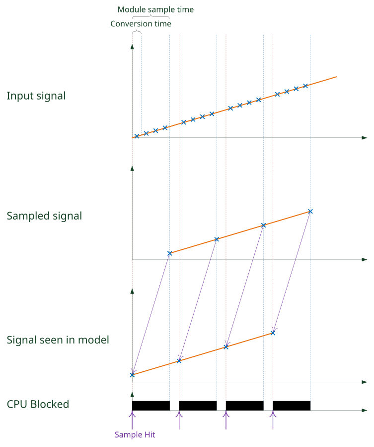
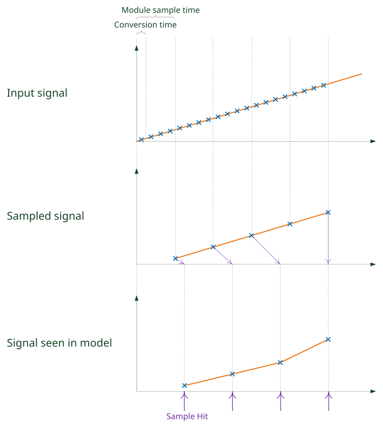

IO130 Usage Notes
IO130 Usage Notes — Usage information about the I/O module
Sampling mode
This note shows the difference between the two different sample mode configurations of the Analog input block.
The configuration is made at the analog input tab of the Setup block.
If the IO130 is configured for manual sampling, a conversion is triggered by the driver block on every sample hit. The driver block then waits for the module to finish the conversation before reading the value.
If the IO130 is configured for continuous sampling, the driver block only needs to read the latest value from the module. This way, a lot of CPU load can be saved. But the input value is not real-time anymore. In case the latest sample is not yet ready at the moment of the sample-hit, the last sample is used. Especially when a high oversampling factor is configured, the last sample can be up to 320us old. And when the module sample time does not accord with the block sample time, this delay is not constant, which can cause signal deformation.
The following examples illustrate a use case with oversampling configuration 4, meaning 4 conversions for one sample.
The input signal is a continuous ramp with a constant slope.
The block sample time was set to a value that is not a multiple of the module's sample time.
Manual sampling
Choosing a manual sampling mode has the effect that the shape of the signal is conserved. On the other hand, the CPU is occupied by the Analog input driver block for a long time.

Continuous sampling
When choosing a continuous sampling mode, CPU is barely occupied by the Analog input driver block. But a continuously increasing deferral of the used sample against the sample hits is created, until one sample is completely skipped. As an effect, the sampled signal does not have a constant slope anymore.

DMA Setup
Interrupt driven execution
If DMA is enabled for either outputs or inputs or both, the model or the asynchronous subsystem where the module is located has to be triggered by the module's interrupt.
This is necessary so the sample hits of the blocks are synchronous to the module's DMA engine.
In DMA mode, the model must contain an Interrupt Setup block that triggers a subsystem or the model. Refer to the block documentation for more information.
Output DMA latency
This note shows the difference between the two different configurations for the latency of the Analog output block in DMA mode.
The configuration is made at the analog output tab of the Setup block.
Latency as small as possible
If the latency is kept as small as possible, the module will start to output values immediately after the reception of a frame. However, the transmission time varies. So, the delay of the outputs towards the analog inputs of the module is not clearly defined. If one transmission takes longer, the outputs get stuck after the previous frame is completed.

Latency 1 frame
If the latency is fixed to 1 frame, the analog outputs only start to output the data of the frame at the next sample hit. This way, the delay of the outputs towards the analog inputs is constant and there is no threat of running out of data at the outputs. The price is the higher latency.